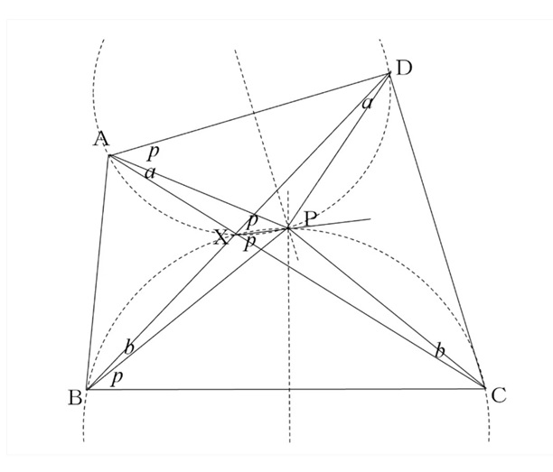

△ABC を鋭角三角形とし，AB>AC とする。△ABC の外接円の B と C における接線の交点を P とする。線分 PB と PC の中点を通る直線は，直線 AB と AC とそれぞれ X と Y で交わる。四角形 AXPY が円に内接することを証明せよ。
△ABC の外接円を円 O とし，中点連結定理や接弦定理を用いて，△ABC∽△PDB∽△PCE を示す。
さらに，対応する角の和の関係から ∠XAY+∠XPY=180∘ を導き，四角形 AXPY が円に内接することを証明する（詳しい解説文は参照ドキュメントに記載）。
